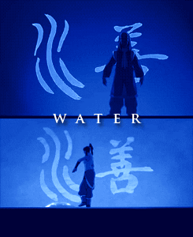
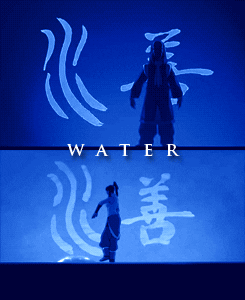

Eu sou a atual Avatar e guardiã do equilíbrio do mundo. Eu nasci na Tribo da Água do Sul, mas fui treinada em todas as quatro artes elementares: água, terra, fogo e ar. Eu também tenho uma forte conexão com o Mundo Espiritual, o que me permite acessar habilidades especiais, como a dobra de energia. Como Avatar, é meu dever manter a paz e a harmonia entre as nações, e estou sempre pronta para proteger aqueles que precisam de ajuda.
 
